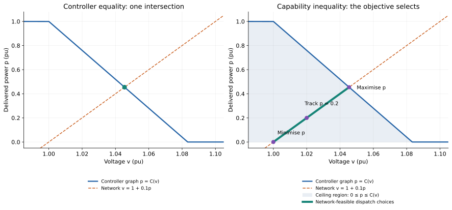
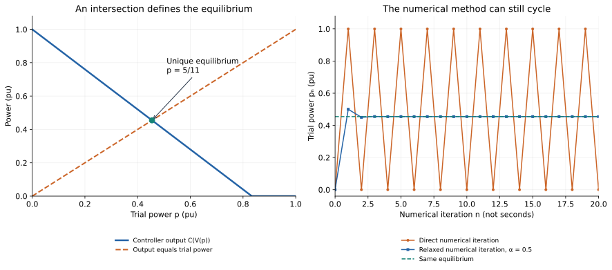
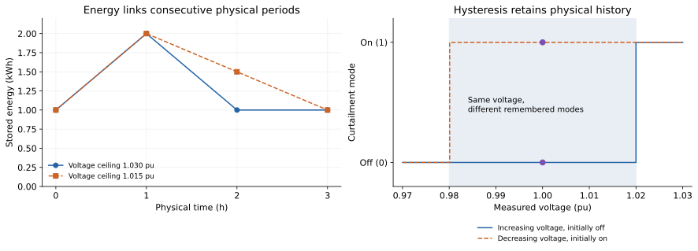

From a controller program to an equilibrium problem
This workbook is for readers who naturally think read inputs → execute logic → update outputs → advance time. We will translate one small controller into simultaneous equations, then change its operating freedom deliberately.
Some simulators already solve simultaneous algebraic systems internally. This workbook makes those relationships visible and separates a prescribed controller from dispatch choices that an objective may select.
Keep three indices separate throughout:
| Index | Meaning | What advances it? |
|---|---|---|
| $n$ | A numerical attempt to find a solution | The solution algorithm |
| $t$ | A physical time period or sample | The physical model's clock |
| No index | An operating point satisfying simultaneous relationships | Nothing advances; we solve for consistency |
Work through predict → run → explain in each exercise. All Julia helpers are in scripts/formulations/equilibrium_workbook.jl; they are teaching utilities, not package APIs. Run the whole workbook with julia --project=. scripts/formulations/equilibrium_workbook.jl. The toy voltage equation below illustrates feedback; it is not a calibrated AC power-flow or inverter dynamics model. The inverter P–Q tutorial and network reproductions supply the circuit-aware follow-up.
Exercise 1: find the feedback hidden in the program
Let delivered active power be $p$ and measured voltage be $v$, both in normalised units. A source has one unit of available power. The toy network and voltage-watt controller are
\[v=1+0.1p,\qquad C(v)=\operatorname{clip}(1-12(v-1),0,1).\]
More export raises voltage. The controller reduces its command as voltage rises. A programmer might search for a consistent operating point like this:
p = 0.0
for n in 1:20
v = 1 + 0.1p # network response to the present trial
raw = 1 - 12(v - 1) # controller calculation
command = clamp(raw, 0, 1) # controller's clipping rule
p = command # next numerical trial
endPredict: write down the first three trial powers. Will the program settle?
using PowerOptLab
include(joinpath(pkgdir(PowerOptLab), "scripts", "formulations", "equilibrium_workbook.jl"))
parameters = wb_parameters()
direct = wb_iteration(parameters; steps=20)
@assert direct.power[1:4] == [0.,1.,0.,1.]
direct.power[1:8]8-element Vector{Float64}:
0.0
1.0
0.0
1.0
0.0
1.0
0.0
1.0The trial cycles between 0 and 1. At $p=0$, voltage is 1 and the command is 1. At $p=1$, voltage is 1.1 and clipping makes the next command 0. This numerical procedure has not found a consistent operating point.
Now translate each line by its mathematical role:
| Program statement | Relationship or role | What must be retained? |
|---|---|---|
v = 1 + 0.1p | Network equation | Voltage and delivered power must agree |
raw = 1 - 12(v - 1) | Controller calculation | The same solved voltage enters the law |
command = clamp(raw, 0, 1) | Operating relationship | Clipping values and branch conditions |
p = command | Controller equilibrium condition | Delivered power equals the command at that voltage |
for n ... | Numerical solution method in this example | It need not become a physical time axis |
| Available power = 1 | Source capability | $0\le p\le1$ still applies |
An assignment computes an output from the program's present inputs. An equilibrium equality constrains the inputs and outputs together. The two interpretations meet at a fixed point of the program's feedback loop.
Exercise 2: solve the operating point without following the loop
On the controller's sloping branch, substitute the network equation:
\[p=1-12(v-1),\quad v=1+0.1p \quad\Longrightarrow\quad 2.2p=1.\]
So $p^*=5/11\approx0.4545$ and $v^*=23/22\approx1.04545$. The raw command is between 0 and 1, which confirms that this branch assumption is consistent.
Predict: will a simultaneous model need a maximum-export objective to find this point?
using JuMP, Ipopt
model = Model(Ipopt.Optimizer)
set_silent(model)
set_optimizer_attribute(model, "tol", 1e-10)
@variable(model, 0 <= p <= 1)
@variable(model, v)
@constraint(model, v == 1 + 0.1p)
@constraint(model, p == 1 - 12(v - 1)) # sloping branch, checked below
@objective(model, Min, 0.0)
optimize!(model)
@assert _wb_solved(model)
@assert abs(value(p)-5/11) < 1e-8
@assert 0 <= 1-12(value(v)-1) <= 1
(p=value(p), v=value(v))(p = 0.45454545454545464, v = 1.0454545454545454)The objective is constant. The two independent equalities already identify the point. The solver seeks values satisfying both; it does not execute the voltage assignment and controller assignment as successive physical events. We still declared variables before using them in the model-building program. That construction order is different from an execution order for the physical system.
Preserve the conditions of every branch
Solving only the sloping branch was justified for the numbers above. For a general clip, there are three guarded relationships:
| Branch | Guard on raw command $r$ | Command $c$ |
|---|---|---|
| Full output | $r\ge1$ | $c=1$ |
| Sloping | $0\le r\le1$ | $c=r$ |
| Off | $r\le0$ | $c=0$ |
Predict: if we keep $p=1$ but forget the full-output guard, will the result satisfy the original controller?
No: $p=1$ gives $v=1.1$ and $r=-0.2$. The original program selects off, contradicting the assumed full-output branch. The guard is part of the law, not an optional numerical aid.
The workbook checks all three affine branches with their guards:
controller = wb_solve(parameters)
@assert length(controller.solutions) == 1
@assert controller.selected.branch == :slope
[(branch=c.branch, consistent=c.solved) for c in controller.candidates]3-element Vector{@NamedTuple{branch::Symbol, consistent::Bool}}:
(branch = :full, consistent = 0)
(branch = :slope, consistent = 1)
(branch = :off, consistent = 0)At a clipping knot, neighbouring closed guards overlap but give the same command. The helper deduplicates identical operating points. This small enumeration is a transparent teaching oracle. Larger models need an encoding chosen for the problem: guarded discrete choices, complementarity, or a declared smooth approximation can have different computational properties. A smooth approximation changes the encoded law near a corner; audit its error.
Exercise 3: a ceiling gives the optimiser additional freedom
Replace $p=C(v)$ by $0\le p\le C(v)$. Keep the network equation. This permits the operator to curtail below the controller's command.
Predict: where will maximum export, minimum export and tracking $p=0.2$ place the operating point?

dispatches = [wb_solve(parameters; relationship=:capability, objective=o)
for o in (:max_p, :min_p, :tracking)]
@assert abs(dispatches[1].selected.power-5/11) < 1e-7
@assert abs(dispatches[2].selected.power) < 1e-7
@assert abs(dispatches[3].selected.power-.2) < 1e-7
[(objective=d.objective, p=d.selected.power, v=d.selected.voltage) for d in dispatches]3-element Vector{@NamedTuple{objective::Symbol, p::Float64, v::Float64}}:
(objective = :max_p, p = 0.4545454545363633, v = 1.0454545454536364)
(objective = :min_p, p = 5.019876046636214e-14, v = 1.000000000000005)
(objective = :tracking, p = 0.20000000001518428, v = 1.0200000000015186)Here $C(1+0.1p)$ is nonincreasing in p, and $g(p)=p-C(1+0.1p)$ is strictly increasing. Its unique zero is $5/11$. The ceiling formulation therefore admits the interval $0\le p\le5/11$. Maximum export selects its right endpoint and reproduces the controller. The other objectives select different allowed points. This argument establishes equivalence for this example and objective, not for arbitrary coupled networks.
A counterexample with an extra voltage requirement
Add $v\le1.03$. The original controller equilibrium has voltage 1.04545, so it cannot meet the extra requirement. The capability formulation can select $p=0.3,v=1.03$. At that voltage the autonomous controller would command 0.64.
strict_voltage = wb_solve(parameters; voltage_max=1.03)
operator_voltage = wb_solve(parameters; relationship=:capability,
objective=:max_p, voltage_max=1.03)
@assert strict_voltage.selected === nothing
@assert abs(operator_voltage.selected.power-.3) < 1e-7
@assert abs(wb_command(parameters,operator_voltage.selected.voltage)-.64) < 1e-7
(controller_feasible=strict_voltage.selected !== nothing,
dispatch=operator_voltage.selected)(controller_feasible = false, dispatch = (branch = :slope, solved = true, status = "LOCALLY_SOLVED", power = 0.2999999999909097, voltage = 1.029999999999091))The operator's point is feasible for the changed operating relationship. An extra voltage inequality did not modify the original controller's command. This is the same distinction behind strict volt-var tracking, proportional current backoff and free-Q dispatch in the inverter examples.
For min/max transformations, always identify whether you need the exact relationship or a one-sided bound. An objective can make a bound tight, but that requires a reason in the complete model. Likewise, $t\ge|x|$ permits $t>|x|$ unless other relationships force equality; an arbitrary objective does not automatically make that auxiliary variable a physical measurement.
Exercise 4: separate a numerical method from physical dynamics
Define $F(p)=C(1+0.1p)$. Near the equilibrium its slope is $F'=-1.2$. Direct iteration amplifies and reverses small errors. Clipping keeps the example bounded, producing the cycle observed earlier.
Numerical relaxation uses
\[p^{n+1}=(1-\alpha)p^n+\alpha F(p^n).\]
Its local error multiplier is $1-2.2\alpha$. With $\alpha=0.5$ it is $-0.1$: the iteration contracts toward the same equilibrium.
relaxed = wb_iteration(parameters; relaxation=.5, steps=20)
@assert abs(last(relaxed.power)-5/11) < 1e-9
(p=last(relaxed.power), equation_residual=last(relaxed.residual))(p = 0.454545454545455, equation_residual = -5.551115123125783e-17)
Open the offline feedback explorer. Start with gain b=1.2 and relaxation α=0.5. Increase α to 1, then reduce the gain below 1. Observe separately the location of the intersection and the behaviour of the numerical trace. The explorer requires no network connection.
Predict: does the cycling numerical trace prove that the physical inverter is unstable?
We have not declared physical dynamics yet. Different dynamics can share this equilibrium:
| Declared physical model | Local behaviour for this example |
|---|---|
| Sampled recurrence $p_{t+1}=F(p_t)$ | Multiplier −1.2: the equilibrium is unstable |
| Continuous response $\tau\dot p=F(p)-p$, $\tau>0$ | Local decay rate $-2.2/\tau$: the equilibrium is locally stable |
| Algebraic equations alone | Specify the operating point; contain no stability result |
These are deliberately different physical assumptions. Introducing numerical relaxation into an algorithm changes its convergence. Introducing the same formula into firmware changes the physical controller dynamics. A nonlinear solver's iterations are not a reconstructed time trace of that controller. Feasibility, numerical convergence and physical stability require separate evidence.
Exercise 5: physical time and memory remain in the model
Schedule a battery, then replay it
Take three one-hour periods, known prices $[1,5,3]$ in arbitrary currency units per kWh, signed power $-1\le p_t\le1$ kW (positive discharge), and an ideal 2 kWh battery. Initial and final energy are both 1 kWh. Each period also satisfies the toy network equilibrium $v_t=1+0.03p_t$. Physical energy conservation is
\[E_{t+1}=E_t-\Delta t_t p_t,\qquad 0\le E_t\le2.\]
Maximise revenue $\sum_t price_t p_t\Delta t_t$. Prices are known to the planner: this is a perfect-foresight scheduling assumption. The ideal battery has no efficiency loss, degradation or detailed electrical model here.
Predict: which period should charge? What prevents the model from selling energy that it never acquires?
battery = wb_battery_schedule()
@assert battery.solved
@assert maximum(abs.(battery.energy-battery.replay_energy)) < 1e-8
@assert maximum(abs.(battery.power-[-1.,1.,0.])) < 1e-7
(power_kW=battery.power, energy_kWh=battery.energy,
sequential_replay_kWh=battery.replay_energy, revenue=battery.revenue)(power_kW = [-0.9999999999909092, 0.9999999999909098, -8.1218066211038e-16], energy_kWh = [1.0, 1.999999999990909, 0.9999999999999992, 1.0], sequential_replay_kWh = [1.0, 1.999999999990909, 0.9999999999999992, 1.0], revenue = 3.999999999963638)The optimiser chooses all periods together. A sequential replay of that chosen schedule produces the same energies: $[1,2,1,1]$ kWh. Conservation, power and energy bounds, and the terminal requirement enforce the physical history. The objective uses future prices to choose a plan; it does not remove causality from the energy transitions.
Now lower the voltage ceiling from 1.03 to 1.015. The network equation limits discharge to 0.5 kW. The schedule changes to $[-1,0.5,0.5]$ kW, while the same energy-transition equations still hold.
restricted = wb_battery_schedule(voltage_max=1.015)
@assert restricted.solved
@assert maximum(abs.(restricted.power-[-1.,.5,.5])) < 1e-7
@assert maximum(abs.(restricted.energy-restricted.replay_energy)) < 1e-8
(power_kW=restricted.power, energy_kWh=restricted.energy, revenue=restricted.revenue)(power_kW = [-0.9999999999850941, 0.4999999999967218, 0.4999999999883723], energy_kWh = [1.0, 1.9999999999850941, 1.4999999999883724, 1.0], revenue = 2.9999999999636318)Preserve a controller's remembered mode
Consider a curtailment mode that turns on at or above 1.02, turns off at or below 0.98, and otherwise retains its previous mode. Equality at either threshold triggers its stated transition. At voltage 1.00, the mode depends on history.
measurements = [1.,1.03,1.,.97,1.]
from_off = wb_hysteresis(measurements; initial=false)
from_on = wb_hysteresis(measurements; initial=true)
@assert from_off == [false,true,true,false,false]
@assert from_on == [true,true,true,false,false]
(initially_off=from_off, initially_on=from_on)(initially_off = Bool[0, 1, 1, 0, 0], initially_on = Bool[1, 1, 1, 0, 0])
Writing a static choice between on and off in the hysteresis band allows an optimiser to select a mode, rather than retain the known previous one. To preserve the controller, include the initial mode and its transition law $m_t=H(v_t,m_{t-1})$. If switching instants or thresholds matter, specify the sampling and tie convention too. Strict comparisons at thresholds require care in continuous optimisation encodings; finite measurement resolution or an explicit boundary convention is a modelling choice, not a hidden tolerance.
The workbook evaluates this memory update sequentially to expose the issue. It does not supply a general mixed-integer hysteresis optimiser. For actual equipment scheduling, use the package's battery model and its supported electrical and temporal assumptions.
Exercise 6: read a constraint report instead of an execution trace
Return to the operator's voltage-constrained point. Inspect what was enforced, what binds, and how delivered power compares with the command:
report = wb_report(parameters,operator_voltage)
@assert :voltage_upper in report.binding
@assert !(:command_ceiling in report.binding)
@assert abs(report.controller_gap+.34) < 1e-7
(branch=report.branch, available=report.available_p, raw=report.raw_p, command=report.command_p,
delivered=report.delivered_p, equalities=report.equalities,
inequality_margins=report.margins, binding=report.binding)(branch = :slope, available = 1.0, raw = 0.6400000000109083, command = 0.6400000000109083, delivered = 0.2999999999909097, equalities = [(name = :network, residual = 0.0, unit = :voltage_pu)], inequality_margins = [(name = :source_lower, margin = 0.2999999999909097, unit = :power_pu), (name = :source_upper, margin = 0.7000000000090902, unit = :power_pu), (name = :voltage_lower, margin = 1.029999999999091, unit = :voltage_pu), (name = :slope_lower_guard, margin = 0.6400000000109083, unit = :power_pu), (name = :slope_upper_guard, margin = 0.3599999999890917, unit = :power_pu), (name = :command_ceiling, margin = 0.3400000000199986, unit = :power_pu), (name = :voltage_upper, margin = 9.090506125630782e-13, unit = :voltage_pu)], binding = [:voltage_upper])Read this report in the following order:
- Declared relationship: this was capability dispatch, so its only network/ controller equality is the network equation. The command is a ceiling.
- Residuals: the network equality is satisfied to numerical tolerance.
- Margins: the voltage ceiling binds. The command ceiling has 0.34 pu of slack. Positive margins are inside their inequalities.
- Available, requested and delivered quantities: one unit is available; the raw and clipped commands are 0.64; delivered power is 0.3. The command gap is allowed by this model and would violate the autonomous controller law.
- Selection: maximum export chooses the endpoint permitted by the voltage ceiling. Other points below it are feasible before objective selection.
The report includes the selected clipping branch and its guard margins. The helper identifies binding inequalities using an explicit margin tolerance. Binding does not by itself prove a constraint has a nonzero economic value. Small residuals do not establish global optimality, uniqueness or physical stability. General nonlinear models may have several equilibria; count variables and equations only as a first check, since independence and Jacobian rank matter.
For the full inverter, use result.operation for declared relationships and physical margins, result.plant for physical powers, and the appropriate terminal phasors to audit their locations. Keep an exact-controller replay at the solved voltage distinct from a comparison of two separately solved network equilibria. The reproduction guide demonstrates that distinction with the actual circuit model.
Apply the translation to your own program
Take one loop and label each statement as physics, operating law, physical memory, numerical method, or selection objective. Then:
- State the inputs, unknowns, sign conventions and physical time assumptions.
- Retain branch guards and distinguish requested from delivered quantities.
- Decide explicitly which commands remain equalities and which become bounds.
- Preserve state transitions and initial conditions whenever history matters.
- Verify a small case analytically, replay its program, and test both agreement and a deliberate difference before using a large feeder.
The formulation comparison table helps map those choices to the supported inverter models. The workbook's simultaneous equations describe consistency; the operating relationships and objective determine how much dispatch freedom remains.